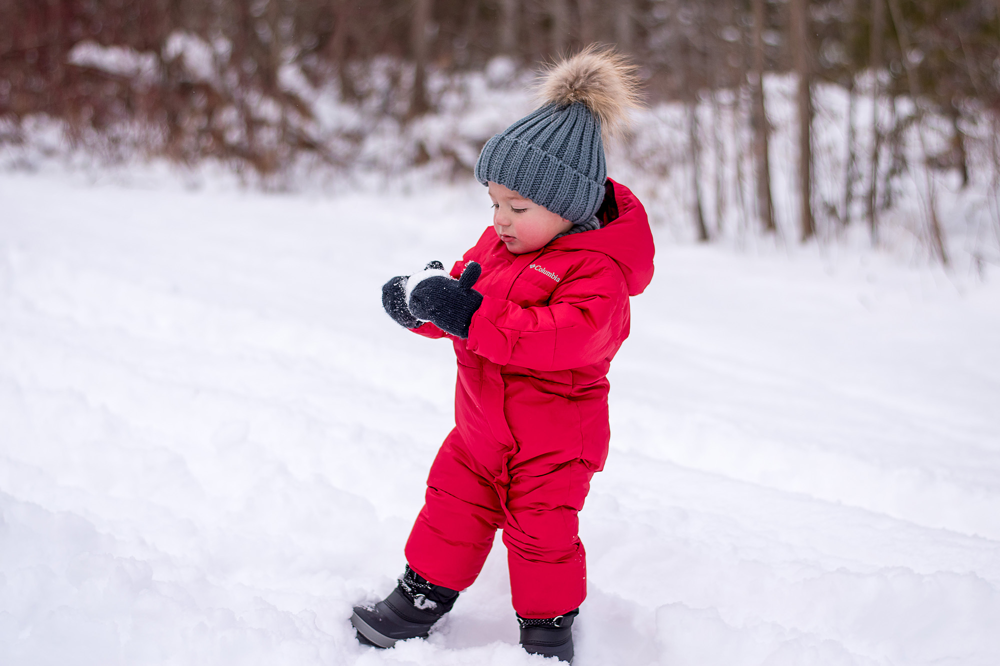
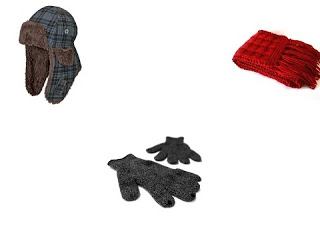

Žieminiai drabužiai - AivaShop.lt
 PRISIJUNKITE arba REGISTRUOKITĖS Titulinis Norų sąrašas (0) Mano profilis Krepšelis Užsakyti Buitis ir Elektronika Buitinė technika Šaldytuvai Šaldikliai Automobiliniai šaldytuvai Skalbyklės Džiovyklės Daugiau... Foto ir vaizdo įranga Blendos Blykstės ir šviestuvai Ekspozicionavimo prietaisai Filtrai objektyvams Fotografijos stalai ir kita Daugiau... Grožio ir higienos prekės Dantų priežiūros priemonės Epiliatoriai Kosmetiniai veidrodžiai Kūno šveitikliai Manikiūro ir pedikiūro priemonės Daugiau... Smulki virtuvės technika Elektriniai garų puodai Kavos ruošimui Kepintuvai Mikseriai ir maišytuvai Trintuvės, pjaustyklės, smulkintuvai Daugiau... Montuojama buitinė technika Mini orkaitės Montuojami kavos aparatai Orkaitės Kaitlentės Įmontuojamos indaplovės Daugiau... Smulki buitinė technika Gariniai valytuvai Kita technika Klimato kontrolės prietaisai Langų valymui Rūbų priežiūrai Daugiau... Televizoriai Nuotolinio valdymo pulteliai Televizijos antenos TV adapteriai ir priedai Medija grotuvai Televizorių laikikliai Vaizdo ir garso technika Aktyvios kolonėlės Ausinės Megafonai Mikrofonai Patefonai Daugiau... Virtuvės įranga Druskos - pipirų malūnėliai Kepinių gaminimo aparatai Kiti virtuvės indai Pramogoms ir šventėms Virtuvės reikmenys ir įrankiai Daugiau... Namų elektronika Industriniai šviestuvai IP kameros Išmanių namų įranga Kompiuterinė technika Biuro prekės Popierius Valikliai Žaidimų įranga Ausinės ir mikrofonai Dronai ir jų priedai Garso kolonėlės Išoriniai įrenginiai Vairai ir vairasvirtės Daugiau... Kompiuteriai Nešiojami kompiuteriai Planšetiniai kompiuteriai Kompiuterių priedai Kompiuterių krepšiai ir dėklai Maitinimo šaltiniai - UPS Pelės kilimėliai Ausinės Ausines su mikrofonu Daugiau... Monitoriai Multimedija Komerciniai ekranai, priedai Projektorių ekranai ir lentos Projektoriai ir jų priedai Spausdintuvai, skeneriai Sporto prekės Treniruokliai Gravitaciniai treniruokliai Priedai treniruokliams Rankų lenkimui Elipsiniai treniruokliai Bėgimo takeliai Daugiau... Kovinis sportas Bokso maišai ir kriaušės Bokso pirštinės Stovai ir laikikliai Bandažai MMA pirštinės Daugiau... Sporto šakos Futbolas Krepšinis Stalo tenisas Badmintonas Smiginis Daugiau... Gimnastika, aerobika, joga Aqua fitneso prekės Gimnastikos, jogos volai Jogos įrankiai Kamuoliai Modulinės dangos Daugiau... Svoriai, grifai, hanteliai Svoriniai krepšiai Hanteliai Girės - svarsčiai Stovai svoriams Grifai svoriams Daugiau... Plaukimas ir nardymas Maudynių priemonės vaikams Žaidimai papludimiui Vandens batai Nardymo kaukės ir vamzdeliai Plaukimo akiniai Daugiau... Sporto Aksesuarai Chronometrai Sportiniai ausinukai Žingsniamačiai Širdies ritmo matuokliai Magnetiniai papuošalai Daugiau... Žiemos sportas Pošalmiai Slidinėjimo batai Pačiūžos Ledo ritulys Lygumų slidės Daugiau... Treniruočių įranga Atsispaudimo rankenos Barjerai Matavimo juostos, ruletės Treniruočių voleliai Vikrumo kopetėlės Daugiau... Lengvoji atletika Startiniai blokai Laisvalaikio prekės Aktyviam laisvalaikiui Irklentės Kojūkai Riedžiai (segway) Šiaurietiško ėjimo ir trekingo lazdos Batutai ir priedai Batutų komplektai Batutai atviri Batutų tinklai Batutų čiužiniai Batutų uždangalai Daugiau... Riedučiai ir riedlentės Riedučiai Riedlentės Šalmai apsauginiai Vaikiški šalmai Riedučiai-pačiūžos Daugiau... Turizmo prekės Palapinės, pavėsinės ir kita Kilimėliai stovyklavimui Miegmaišiai Krepšiai ir kuprinės Pripučiami čiužiniai, baldai Daugiau... Dviračiai ir aksesuarai Kuprinės dviratininkams Vaikiškos kėdutės Dviratininko pirštinės Dviratininko šalmai Dviratininko apranga Daugiau... Krepšiai, kuprinės, piniginės Sportiniai krepšiai Kuprinės Batų krepšiai Juosmens krepšiai Piniginės Daugiau... Motociklai ir keturračiai Elektriniai keturračiai 4T benzininiai keturračiai Akiniai Apranga Apsaugos Daugiau... Optika laisvalaikiui Didinamieji stiklai Mikroskopai Teleskopai Žiūronai Vandens pramogos Pripučiami baseinai Pripučiami čiužiniai Pripučiamos liemenės ir rankovės Pripučiami ratai, kamuoliai ir kt. Baseinai Daugiau... Žaidimų stalai Futbolas Ruletė Biliardas Oro ritulys Pokeris Daugiau... Žvejybos reikmenys Aksesuarai, dovanos Dirbtiniai masalai Elektroninė įranga Įranga žūklei Jaukai Daugiau... Namai Sodas Remontas Sodo ir daržo prekės Šiltnamiai ir priedai Plėvelės, agrodangos Šašlykinės ir griliai Sniego kastuvai ir gremžtukai Sodo įrankiai Daugiau... Sodo technika Vejapjovės Krūmapjovės Lapų pūstuvai, siurbliai Šakų smulkintuvai Šlavimo mašinos Daugiau... Įrankiai Dažymo, apdailos įrankiai Degikliai, lituokliai, šildytuvai Dėžės, krepšiai, darbastaliai Elektriniai įrankiai Gręžimo, sriegimo įrankiai Daugiau... Elektros prekės Akumuliatorių baterijos Elektros ilgikliai Elementai, žibintuvėliai Namų remontas Chemija, klijai, putos, hermetikai Lipnios juostos Plytelės ir trinkelės Tvirtinimo medžiagos Durys Daugiau... Baldai Pufai - batinės Sodo supynės Supami krėslai Vaikų kambario kėdės Prekės namų interjerui Laikrodžiai, veidrodžiai Magnetukai, suvenyrai Pakabos, kabyklos Taupyklės Termometrai buitiniai Daugiau... Namų apyvokos prekės Šluotos, šepečiai, semtuvėliai Staltiesės, padėkliukai Vonelės, dubenys Kitos namų apyvokos prekės Seifai Naminių augintinių reikmenys Techniniai įrengimai Fontanų įranga Aukšto slėgio plovimo įranga Elektros generatoriai Oro kompresoriai Suvirinimo aparatai Auto prekės Automobilių plovimo priemonės Akumuliatoriai Aksesuarai automobiliams Akumuliatorių įkrovikliai Rūbai Avalynė Aksesuarai Avalynė Laisvalaikio bateliai Bėgimo bateliai Sportiniai bateliai Futbolo bateliai Šlepetės Daugiau... Marškinėliai Vyriški marškinėliai Vyriški polo marškinėliai Moteriški marškinėliai Moteriški polo marškinėliai Vaikiški marškinėliai Daugiau... Kelnės, šortai Kelnės vyrams Kelnės moterims Kelnės vaikams Šortai vyrams Šortai moterims Daugiau... Džemperiai Vyriški džemperiai Moteriški džemperiai Vaikiški džemperiai Unisex džemperiai Sportiniai kostiumai Sportiniai kostiumai vyrams Sportiniai kostiumai moterims Sportiniai kostiumai vaikams Sportinė apranga Futbolo apranga Krepšinio apranga Aprangų komplektai Tinklinio apranga Skiriamieji marškinėliai Daugiau... Striukės, liemenės Striukės Liemenės Termo drabužiai Termo drabužiai vyrams Termo drabužiai moterims Termo drabužiai vaikams Termo kojinės Apranga žvejybai Bridkelnės Demisezoniniai kostiumai Neskęstantys kostiumai Žieminiai kostiumai Kepurės, šalikai, pirštinės Kepurės Pirštinės Šalikai, skarelės, movai Kepurės su snapeliu Kepuraitė - snapelis Maudymosi rūbai Maudymosi kostiumėliai Maudymosi glaudės ir šortai Kojinės Apatiniai rūbai Apatiniai rūbai moterims Apatiniai rūbai vyrams Sportinės liemenėlės Darbo apranga Akių ir veido apsaugos Antkeliai Darbo batai Galvos apsauga Kelnės darbui Daugiau... Lietaus rūbai Apyrankės, galvajuostės Manekenai Santechnika ir Šildymas Dušo įranga Dušo kabinos Masažinės Dušo Kabinos Garinės dušo kabinos Kabinos - saunos Dušo sienelės, durys Daugiau... Vonios, masažo sistemos Masažinės vonios Akrilinės vonios Ketaus vonios Plieninės vonios Akmens masės vonios Daugiau... Klozetai, praustuvai ir kita Praustuvai Klozetai Bidė Pisuarai Keramika kita Daugiau... Virtuvės plautuvės Ūkinės plautuvės Granitinės plautuvės Plautuvės su defektais Nerūdijančio plieno plautuvės Priedai plautuvėms Vandens maišytuvai Atsarginės dalys maišytuvams Vandens maišytuvai sieniniai Virtuvės maišytuvai Praustuvo maišytuvai Bidė maišytuvai Daugiau... Rankšluosčių džiovintuvai Nerūdijančio plieno gyvatukai Tenai gyvatukams Kopetėlės Gyvatukai Elektriniai rankšluosčių džiovintuvai Daugiau... Potinkinės sistemos Potinkiniai Bidė rėmai Potinkiniams maišytuvams Potinkiniai WC rėmai Potinkiniai mygtukai Potinkiniai priedai Vonios baldai ir aksesuarai Vonios aksesuarai Kabliukai vonios kambariui Lentynos, krepšeliai Priedai vonios baldams Rankšluosčių laikikliai Daugiau... Šildymas ir vėdinimas Armatūra, Tvirtinimai, Izoliacija Chemija Dujiniai šildytuvai Dūmtraukiai ir kaminai Dyzeliniai šildytuvai Daugiau... Vandens siurbliai Greitaeigiai šildytuvai Cirkuliaciniai siurbliai Giluminiai siurbliai Nešvaraus vandens siurbliai Siurblių priedai Daugiau... Vamzdynai ir jungtys Daugiasluoksnis PEX ir PERT vamzdis Daugiasluoksnių vamzdžių fitingai Drenažiniai vamzdžiai ir jungtys Išardomos jungtys Juodo metalo vamzdžiai ir jungtys Daugiau... Kita santechnika Sifonai, trapai ir latakai Nuotekų valymo įrenginiai Vandens filtrai Sveikata ir Reabilitacija Įtvarai Blauzdos įtvarai Peties įtvarai Šlaunies įtvarai Riešo įtvarai Alkūnės įtvarai Daugiau... Kineziterapija Kineipo takeliai Ortopedines prekės Pėdų priežiūrai Teipai Vidpadžiai, įdėklai Kompresinės priemonės Priemonės judėjimui Antgaliai ramentams Elektriniai vežimėliai ir priedai Kopikliai laiptais Stabilizacinės vaikštynės Vaikščiojimo rėmai Daugiau... Voniai ir tualetui Dušo kėdutės Tualeto kėdės, vežimėliai Tualeto paaukštinimai Vonios laipteliai Vonios suoliukai Daugiau... Slauga, negalia Basonai, antelės ir kita Grikių lukštų pagalvės Paklodės, užtiesalai Pragulų profilaktikai Vaistų dalijimui Daugiau... Reabilitacija Inversiniai stalai Aparatai Ergoterapinės priemonės Juostos, gumos ir tampyklės Kilimėliai mankštai Daugiau... Masažo terapija Mobilūs masažo stalai Masažo kėdės Elektriniai masažuokliai Krepšiai masažo stalams Masažo aliejus Daugiau... Grožio salonams ir SPA centrams Baldai grožio salonams ir SPA centrams Kosmetologinė įranga Kosmetologinės kušetės Manikiūro stalai Pedikiūro krėslai Medicininės priemonės ir technika Funkcinės kėdės Gliukozės kraujyje matuokliai KMI svarstyklės Ligonių pervežimui Ligonių spintelės Daugiau... Medicininė apranga Kompresinės kojinės Kompresinės pėdkelnės Lieknėjimo šortai Respiratoriai ir kaukės Pirmosios pagalbos priemonės Prekės mamoms Diržai ir korsetai Vaikams ir Kūdikiams Pramogoms lauke Paspirtukai Balansiniai Dviračiai Elektromobiliai vaikams Keturračiai, traktoriai Žaidimų aikštelės Daugiau... Žaislai Žaidimai Dovanos Įvairūs žaislai Lavinamieji žaislai Žaislinės virtuvės ir jų priedai Žaislai kūdikiams Konstruktoriai Daugiau... Kalėdinės prekės Eglutės, vainikai, stovai Krepšiai, kuprinės, lagaminai Vaikiškos kuprinės / krepšiai Vaikiški baldai Vaiko augimui Automobilinės kėdutės Maitinimo kėdutės Maniežai vaikams Sūpuoklės Vaikiški vežimėliai - lopšiai Vaikų priežiūra Sauskelnės Miegmaišiai ir vokeliai vaikams Minkštos dangos Šildyklės Nešyklės Fototapetai vaikų kambariui Specialūs pasiūlymai
Ieškoti
Krepšelis: 0 prekė(s) - 0,00€ Prekių krepšelis tusčias Rūbai Avalynė Aksesuarai Avalynė - Laisvalaikio bateliai - Bėgimo bateliai - Sportiniai bateliai - Futbolo bateliai - Šlepetės - Guminiai ir PVC batai - Bridbačiai - Turistiniai batai - Žieminiai batai - Krepšinio bateliai - Teniso bateliai - Tinklinio bateliai - Rankinio bateliai - Sandalai - Šokių bateliai - Batų priedai Marškinėliai - Vyriški marškinėliai - Vyriški polo marškinėliai - Moteriški marškinėliai - Moteriški polo marškinėliai - Vaikiški marškinėliai - Vaikiški polo marškinėliai - Unisex marškinėliai - Unisex polo marškinėliai Kelnės, šortai - Kelnės vyrams - Kelnės moterims - Kelnės vaikams - Šortai vyrams - Šortai moterims - Šortai vaikams - 3/4 kelnės vyrams - 3/4 kelnės moterims - 3/4 kelnės vaikams - Tamprės vyrams - Tamprės moterims - Tamprės vaikams Džemperiai - Vyriški džemperiai - Moteriški džemperiai - Vaikiški džemperiai - Unisex džemperiai Sportiniai kostiumai - Sportiniai kostiumai vyrams - Sportiniai kostiumai moterims - Sportiniai kostiumai vaikams Sportinė apranga - Futbolo apranga - Krepšinio apranga - Aprangų komplektai - Tinklinio apranga - Skiriamieji marškinėliai - Vartininkų apranga - Marškinėliai teisėjams Striukės, liemenės - Striukės - Liemenės Termo drabužiai - Termo drabužiai vyrams - Termo drabužiai moterims - Termo drabužiai vaikams - Termo kojinės Apranga žvejybai - Bridkelnės - Demisezoniniai kostiumai - Neskęstantys kostiumai - Žieminiai kostiumai Kepurės, šalikai, pirštinės - Kepurės - Pirštinės - Šalikai, skarelės, movai - Kepurės su snapeliu - Kepuraitė - snapelis Maudymosi rūbai - Maudymosi kostiumėliai - Maudymosi glaudės ir šortai Kojinės Apatiniai rūbai - Apatiniai rūbai moterims - Apatiniai rūbai vyrams Sportinės liemenėlės Darbo apranga - Akių ir veido apsaugos - Antkeliai - Darbo batai - Galvos apsauga - Kelnės darbui - Kombinezonai - Rankų apsauga - Signaliniai darbo rūbai - Striukės ir liemenės - Suvirintojo rūbai - Žieminiai drabužiai Lietaus rūbai Apyrankės, galvajuostės Manekenai Jūsų peržiūrosDeja, peržiūrų kol kas nėra.
Titulinis / Rūbai Avalynė Aksesuarai / Darbo apranga / Žieminiai drabužiaiŽieminiai drabužiai
Šioje kategorijoje nėra prekių. TęstiInformacija
Apie AivaShop.lt Atsiliepimai pirkėjų Prekių pirkimo taisyklės Prekių grąžinimas TaxFree Privatumo nuostatos Siūlome darbąKlientų aptarnavimas
Kontaktai Grąžinimai Svetainės medisPapildomai
Gamintojai Dovanų kuponai SpecialūsPaskyra
Paskyra Užsakymų istorija Norų sąrašas Naujienlaiškis Naršykite tarp visų mūsų prekių Buitis ir Elektronika Buitinė technika / Foto ir vaizdo įranga / Grožio ir higienos prekės / Smulki virtuvės technika / Montuojama buitinė technika / Smulki buitinė technika / Televizoriai / Vaizdo ir garso technika / Virtuvės įranga / Namų elektronika / Kompiuterinė technika Biuro prekės / Žaidimų įranga / Kompiuteriai / Kompiuterių priedai / Monitoriai / Multimedija / Spausdintuvai, skeneriai / Sporto prekės Treniruokliai / Kovinis sportas / Sporto šakos / Gimnastika, aerobika, joga / Svoriai, grifai, hanteliai / Plaukimas ir nardymas / Sporto Aksesuarai / Žiemos sportas / Treniruočių įranga / Lengvoji atletika / Laisvalaikio prekės Aktyviam laisvalaikiui / Batutai ir priedai / Riedučiai ir riedlentės / Turizmo prekės / Dviračiai ir aksesuarai / Krepšiai, kuprinės, piniginės / Motociklai ir keturračiai / Optika laisvalaikiui / Vandens pramogos / Žaidimų stalai / Žvejybos reikmenys / Namai Sodas Remontas Sodo ir daržo prekės / Sodo technika / Įrankiai / Elektros prekės / Namų remontas / Baldai / Prekės namų interjerui / Namų apyvokos prekės / Seifai / Naminių augintinių reikmenys / Techniniai įrengimai / Auto prekės / Rūbai Avalynė Aksesuarai Avalynė / Marškinėliai / Kelnės, šortai / Džemperiai / Sportiniai kostiumai / Sportinė apranga / Striukės, liemenės / Termo drabužiai / Apranga žvejybai / Kepurės, šalikai, pirštinės / Maudymosi rūbai / Kojinės / Apatiniai rūbai / Sportinės liemenėlės / Darbo apranga/ Lietaus rūbai / Apyrankės, galvajuostės / Manekenai / Santechnika ir Šildymas Dušo įranga / Vonios, masažo sistemos / Klozetai, praustuvai ir kita / Virtuvės plautuvės / Vandens maišytuvai / Rankšluosčių džiovintuvai / Potinkinės sistemos / Vonios baldai ir aksesuarai / Šildymas ir vėdinimas / Vandens siurbliai / Vamzdynai ir jungtys / Kita santechnika / Sveikata ir Reabilitacija Įtvarai / Kineziterapija / Ortopedines prekės / Priemonės judėjimui / Voniai ir tualetui / Slauga, negalia / Reabilitacija / Masažo terapija / Grožio salonams ir SPA centrams / Medicininės priemonės ir technika / Medicininė apranga / Pirmosios pagalbos priemonės / Prekės mamoms / Vaikams ir Kūdikiams Pramogoms lauke / Žaislai Žaidimai Dovanos / Kalėdinės prekės / Krepšiai, kuprinės, lagaminai / Vaikiški baldai / Vaiko augimui / Vaikų priežiūra / Fototapetai vaikų kambariui / Elektroninių parduotuvių kūrimas Svetainių kūrimas MODE OAivaShop.lt © 2020
